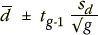
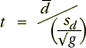

Approach
In a randomised block experiment with g matched pairs, all information about the difference between the factor levels is contained in the g differences within the matched pairs (blocks). These differences can be considered to 'correct' for differences between blocks.
Questions about the effect of the factor on the response can be expressed as:
Is the mean of the differences zero?
What is a 95% CI for the mean difference?
Standard univariate inference can be used to answer these questions.
Confidence intervals
In terms of the differences, a 95% confidence interval for the mean effect of changing the factor level is

where tg-1 is the 97.5th percentile of the t distribution with g - 1 degrees of freedom.
Paired t-test
Testing whether there is any difference between the factor levels can be expressed with the hypotheses
H0 : µD = 0
HA : µD ≠ 0
The hypotheses are assessed using a standard t-test with test statistic

This value is compared to a t distribution with g - 1 degrees of freedom to find the p-value for the test.
Twin study
The diagram below shows the IQs of the twin study that was used earlier in this section.
The p-value on the right is for a test of whether the differences (good minus poor environment) are a sample from a population with mean zero. From it, we conclude that the mean of the differences is not zero.
It is almost certain that children raised in a good environment have a different mean IQ from those raised in a poor environment.
The interval on the left is a 95% confidence interval for the mean difference.
We have 95% confidence that being raised in a good environment increases IQ by between 20.3 and 40.7